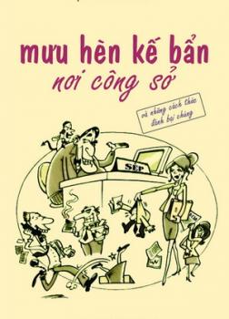

« Back
Mưu Hèn Kế Bẩn Nơi Công Sở
By Alpha Books Biên Soạn

LỜI NGỎ.
1. Thăng Quan Tiến Chức.
KẾ BẨN SỐ 1: CON TỐT THÍ MẠNG.
KẾ BẨN SỐ 2: CƠ HỘI THĂNG TIẾN.
KẾ BẨN SỐ 3: LÝ ĐẠI ĐÀO CƯƠNG.
2. Sau Tấm Màn Nhung.
KẾ BẨN SỐ 4: THẤY CHẾT KHÔNG CỨU.
KẾ BẨN SỐ 5: ÁC LÀ ĐẠO CHÍCH.
KẾ BẨN SỐ 6: “TIẾP TỤC NGHIÊN CỨU ĐI!”.
3. Những Lời Có Cánh.
KẾ BẨN SỐ 7: LỬNG LƠ CON CÁ VÀNG.
KẾ BẨN SỐ 8: HẠC TRÊN MÂY.
KẾ BẨN SỐ 9: THIÊN THẦN HỘ MỆNH.
4. Lên Voi Xuống Chó.
KẾ BẨN SỐ 10: GỬI E-MAIL CHO THƯỢNG ĐẾ.
KẾ BẨN SỐ 11: CÁO MƯỢN OAI HÙM.
KẾ BẨN SỐ 12: ĐE DỌA VẠCH MẶT.
5. Những Đòn Lộ Liễu.
KẾ BẨN SỐ 13: GIƯƠNG ĐÔNG KÍCH TÂY.
KẾ BẨN SỐ 14: PHẢN HỒI ÁC Ý.
KẾ BẨN SỐ 15: NÉ TRÁNH TRÁCH NHIỆM.
6. Trên Đà Thắng Lợi.
KẾ BẨN SỐ 16: ĐÁ RA RÌA.
KẾ BẨN SỐ 17: HỌP KÍN.
KẾ BẨN SỐ 18: CHẠY TRỜI KHÔNG KHỎI NẮNG.
7. Ra Đòn Quyết Định.
KẾ BẨN SỐ 19: VỊ “ANH HÙNG” BỊ XIỀNG XÍCH.
KẾ BẨN SỐ 20: CHÚNG TÔI CHỐNG LƯNG CHO ANH!.
KẾ BẨN SỐ 21: TÁI THIẾT.
Hồi Kết: Hạnh Phúc Mãi Mãi.